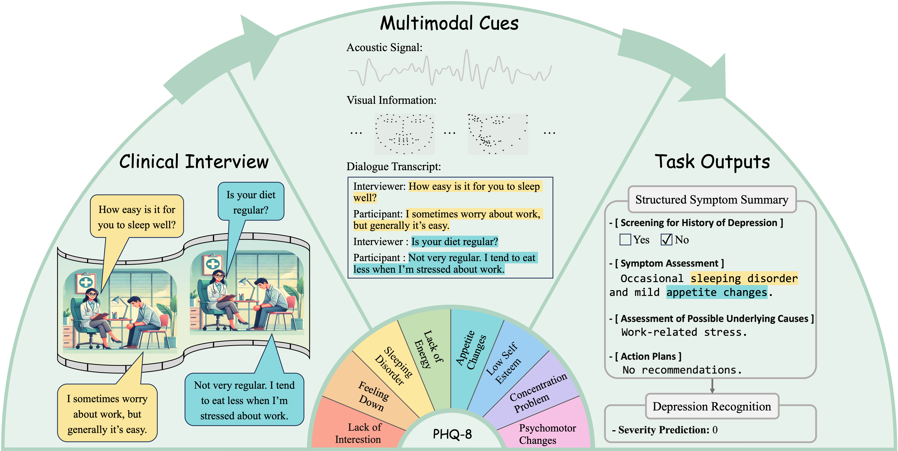
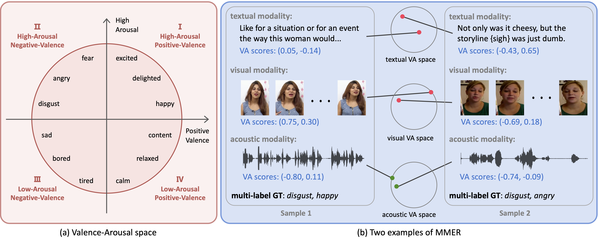
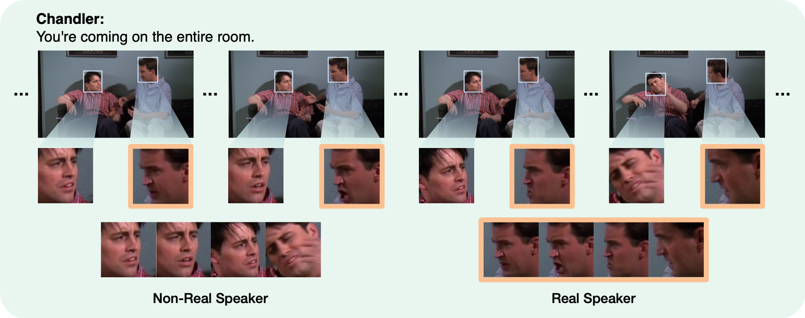
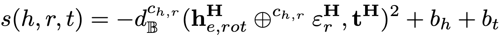
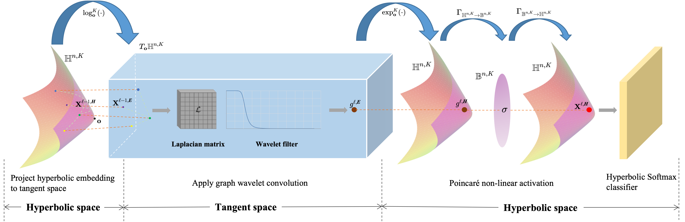
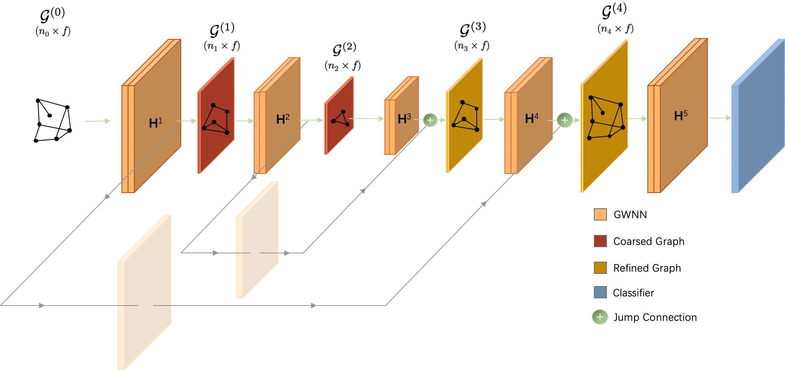

Wenjie Zheng (郑文杰)
|
I am a three-year PhD student in computer science at the Nanjing University of Science and Technology (NJUST) advised by Prof. Rui Xia and Assoc. Prof. Jianfei Yu.
My current research interests focus on multimodal learning and affective computing, particularly in emotion recognition and mental health analysis.
|  |
Towards Explainable Multimodal Depression Recognition for Clinical Interviews |
|  |
A Unimodal Valence-Arousal Driven Contrastive Learning Framework for Multimodal Multi-Label Emotion Recognition |
|  |
A Facial Expression-Aware Multimodal Multi-task Learning Framework for Emotion Recognition in Multi-party Conversations |
|  |
Hyperbolic hierarchical knowledge graph embeddings for link prediction in low dimensions |
|  |
Hyperbolic Graph Wavelet Neural Network |
|  |
M-GWNN: Multi-granularity graph wavelet neural networks for semi-supervised node classification |
Conference Reviewer: ACM MM 2024, COLING 2025
Journal Reviewer: IEEE Transactions on Affective Computing (TAFFC)
[2023.07] 中国情感计算大会-对话中的多模态情感识别竞赛三等奖
Last update: 2025.02.03